PARVOZАНГАР
Мастерская
Luma 5 Copy 15″ · Фристайл
ТЕКУЩАЯ СБОРКА
Расчётные значенияХарактеристики
Масса595 г
Отклик моторов35 мс
Энергия батареи28.9 Вт·ч
- Тяга / вес
- 5.6×
- Примерное время полёта
- 6 мин
- Камера
- 105°